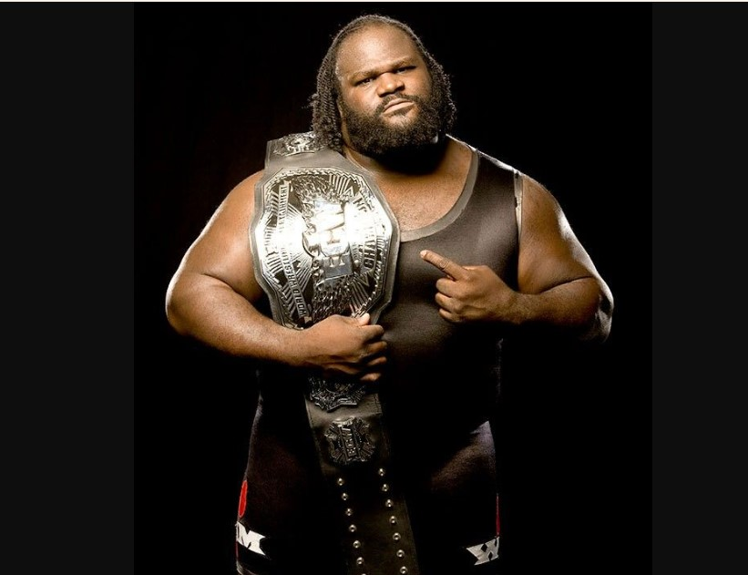

Born on June 12, 1971, in Silsbee, Texas, Mark Jerrold Henry showed remarkable strength from a young age. Known as "the world’s strongest teenager," he laid the foundation for a career that would span decades and cross multiple disciplines.
Mark Henry represented the United States in two Olympic Games—Barcelona in 1992 and Atlanta in 1996. His prowess in weightlifting earned him recognition as one of the best in the sport.
In 1996, Mark Henry signed with WWE, marking the beginning of a legendary career in professional wrestling. Despite being new to the sport, his raw strength and larger-than-life personality quickly made an impact.
Adapting to wrestling wasn’t easy. Henry faced early struggles but persevered, eventually becoming a cornerstone of WWE programming.
Mark Henry’s "Hall of Pain" persona became iconic. This phase of his career saw him dominate opponents with unparalleled ferocity, earning him widespread acclaim.
Henry’s crowning moment came in 2011 when he defeated Randy Orton to win the World Heavyweight Championship. This victory cemented his legacy as one of WWE’s greatest.
In 2018, Mark Henry was inducted into the WWE Hall of Fame, a testament to his influence on the industry and his exceptional contributions to sports entertainment.
Mark Henry plays a crucial role in mentoring young wrestlers, helping shape the future of WWE. His guidance has been instrumental in developing new talent.
Henry has been a strong advocate for diversity and representation in sports and entertainment. As one of WWE’s first African-American World Champions, his influence extends beyond the ring.
From weightlifting records to wrestling championships, Mark Henry’s legacy is unmatched. His contributions to sports and his mentorship of future stars ensure his influence will endure for generations.